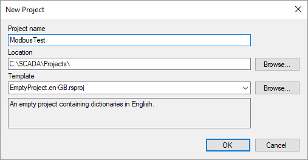
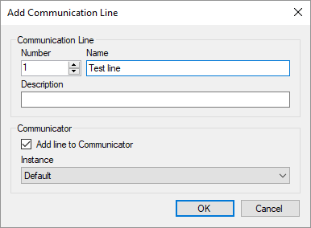
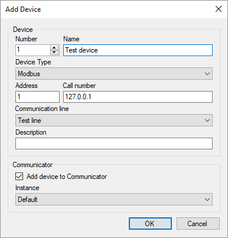
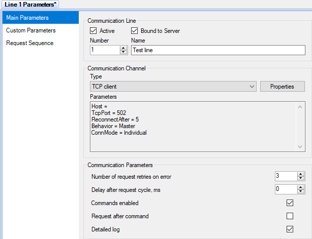
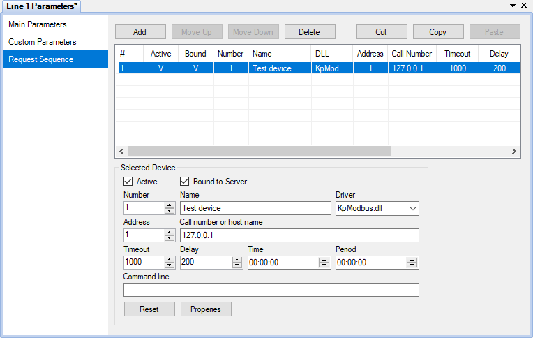
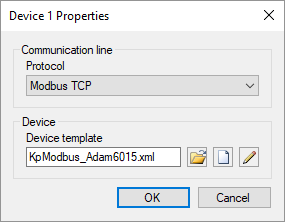
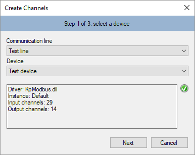
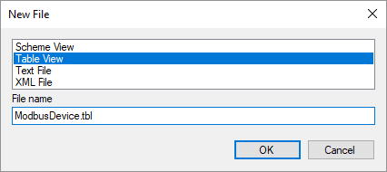

Conexión de dispositivos mediante protocolo Modbus
Written by Rapid SCADA on January 5, 2015
Updated on July 10, 2019
Este artículo describe cómo configurar la comunicación con dispositivos que utilizan el protocolo Modbus. Simple y robusto, Modbus se ha convertido desde que fuera introducido en el protocolo de comunicación estándar de facto, y es hoy un medio comúnmente disponible para interconectar dispositivos electrónicos industriales (ver Wikipedia). Rapid SCADA soporta las variantes Modbus RTU, ASCII y TCP.
Secuencia general de configuración:
- Cree un proyecto utilizando la aplicación Administrator.
- Cree un nuevo objeto, una línea de comunicación y los dispositivos.
- Configure la comunicación entre Communicator y los dispositivos.
- Cree canales de entrada en la base de datos de configuración, de acuerdo con las etiquetas de los dispositivos. Cree canales de salida de acuerdo con los comandos.
- Cree las vistas (tablas o esquemas) en las que mostrar datos en la aplicación Webstation. Defina las vistas en la base de datos de configuración.
La siguiente es una guía paso a paso para configurar un nuevo dispositivo Modbus.
Creación de un proyecto
Ejecute Administrator haga clic en el botón New Project. Ingrese el nombre del proyecto en el cuadro de diálogo y haga clic en el botón OK. Si selecciona como plantilla (Template) el proyecto vacío EmptyProject.en-GB, el proceso de configuración a describir será totalmente coherente con este artículo.

Figura 1. Creación de un proyecto
Configuración preliminar de la Base de datos
Expanda el nodo Configuration Database abra la tabla Objects y agregue una nueva fila para el objeto 2 "Test object" (Objeto de prueba). Vea la Figura 2. Haga clic en el botón  de la barra de herramientas para abrir el asistente Add Communication lines (Agregar líneas de comunicación). Con el asistente, agregue la línea 1 "Test line". Vea la Figura 3. Después de eso, haga clic en el botón
de la barra de herramientas para abrir el asistente Add Communication lines (Agregar líneas de comunicación). Con el asistente, agregue la línea 1 "Test line". Vea la Figura 3. Después de eso, haga clic en el botón  Add Device, y agregue el dispositivo 1 "Test device". Vea la Figura 4.
Add Device, y agregue el dispositivo 1 "Test device". Vea la Figura 4.

Figura 2. Agregando un objeto

Figura 3. Agregando una línea de comunicación

Figura 4. Agregando un dispositivo
Al agregar dispositivos, preste atención a los siguientes campos:
| Device type: |
Modbus |
| Address: |
Dirección Modbus del dispositivo, por ejemplo 1 |
| Call number: |
Dirección IP, si el dispositivo se conecta vía Ethernet. De otra forma, déjelo en blanco |
| Communication line: |
"Test line", la que acabamos de crear |
Abra las tablas Communication lines (Líneas de comunicación) y Devices (Dispositivos) para verificar que la línea de comunicación y el dispositivo fueron agregados correctamente. Asegúrese de que la línea de comunicación y el dispositivo correspondiente fueron creados en la configuración del Communicator.
Configurando la comunicación con los dispositivos
En el explorador de proyectos, vaya a Communicator – Communication lines - Line Parameters (Parámetros de línea). Configure el canal de comunicación cuyos ajustes están en la página Main Parameters (Parámetros principales). Refiérase a la Figura 5. En el caso de la comunicación vía Modbus, los tipos de canal más comunes son el TCP client y el Serial Port(puerto serie).

Figura 5. Parámetros principales de una línea de comunicación
Si la comunicación se realiza a través de un puerto serie, los parámetros típicos del puerto serie, según el tipo de Modbus, se muestran en la lista de abajo. En los modos RTU y ASCII los parámetros de la comunicación serial, especificados en la configuración del Communicator, deben coincidir con los mismos parámetros en los dispositivos. Todos los dispositivos conectados a una línea de comunicación deben funcionar con el mismo tipo de Modbus y con los mismos parámetros de comunicación serial, velocidad de transmisión, data bits, paridad y stop bits.
| Modbus RTU |
Modbus ASCII |
Modbus TCP |
8 data bits,
Even parity,
1 stop bit |
7 data bits,
Even parity,
1 stop bit |
- |
8 data bits,
No parity,
2 stop bits |
7 data bits,
No parity,
2 stop bits |
- |
Vaya a la página Request Sequence (Secuencia de solicitud) y seleccione la fila "Test device" (refiérase a la Figura 6). Si no se especifican el tiempo y el período de sondeo (encuesta o interrogación) del dispositivo, los dispositivos se sondean (poll) cíclicamente. Los comandos que hayan sido programados se envían inmediatamente después de completar una encuesta.

Figura 6. Secuencia de solicitud a los dispositivos
Haga clic en el botón Properties (Propiedades) para abrir el formulario de propiedades del dispositivo (refiérase a la Figura 7). En el formulario, seleccione el tipo de Modbus que usa el dispositivo que se conectará a la línea, que debe estar indicado en el manual del mismo. En nuestro caso es Modbus TCP.

Figura 7. Propiedades del dispositivo
Haga clic en el botón  para seleccionar una plantilla de dispositivo existente, o haga clic en
para seleccionar una plantilla de dispositivo existente, o haga clic en  para crear una nueva plantilla. Cuando se hace clic en el botón Crear o en el botón Editar
para crear una nueva plantilla. Cuando se hace clic en el botón Crear o en el botón Editar  se muestra el Device Template Editor (Editor de plantillas) del dispositivo (refiérase a la Figura 8). El dispositivo del ejemplo utiliza la plantilla existente KpModbus_Adam6015.xml, que se copió previamente en el directorio del proyecto C:\SCADA\Projects\ModbusTest\Instances\Default\ScadaComm\Config\
se muestra el Device Template Editor (Editor de plantillas) del dispositivo (refiérase a la Figura 8). El dispositivo del ejemplo utiliza la plantilla existente KpModbus_Adam6015.xml, que se copió previamente en el directorio del proyecto C:\SCADA\Projects\ModbusTest\Instances\Default\ScadaComm\Config\

Figure 8. Editor de plantillas de dispositivos
La plantilla del dispositivo refleja la estructura de los paquetes Modbus. Los datos solicitados se combinan en grupos de elementos. Cada grupo tiene su nombre, tabla de datos, dirección de inicio y cantidad de elementos. Cada elemento es una etiqueta de un dispositivo, con un dato asociado. Rapid SCADA identifica una etiqueta por su número de señal. Un comando se describe por su nombre, tabla de datos y una dirección. Un número de comando identifica el comando dentro de Rapid SCADA.
Los nombres de grupos, elementos y comandos son arbitrarios. Las tablas de datos disponibles y las direcciones de los elementos, generalmente están indicados en el manual del dispositivo. Dependiendo del fabricante, el direccionamiento de los elementos puede estar basado en cero o basado en uno, especificados en números decimales o hexadecimales. Por defecto, las direcciones comienzan con 1 y se representan como números decimales. Para cambiar el direccionamiento de plantilla, haga clic en el botón  que abre el cuadro de diálogo de configuración de plantilla (ver Figura 9).
que abre el cuadro de diálogo de configuración de plantilla (ver Figura 9).

Figure 9. Configuración de la plantilla
Cuando finalice la edición de las propiedades del dispositivo (vea la Figura 7), haga clic en OK. El campo Command line (Línea de comando) de los parámetros del dispositivo contiene el nombre del archivo de plantilla KpModbus_Adam6015.xml. Suba el proyecto al Server con el botón  (upload Configuration).
(upload Configuration).
En el explorador de proyectos haga doble clic en el nodo del dispositivo, para verificar el estado del dispositivo y la disponibilidad de los datos (vea la Figura 10). Los datos para este ejemplo fueron proporcionados por Modbus Simulator.

Figura 10. Datos del dispositivo
En caso de perder la comunicación con el dispositivo, utilice el registro de comunicación en línea para darse cuenta de la causa del problema. Para abrir el registro, haga doble clic en el nodo del árbol Line Stats (estadística de línea) y vaya a la página Line Log. Allí podrá ver los detalles de cada comunicación en tiempo real y los paquetes de datos pueden ser decodificados por el Rapid SCADA Online Modbus Parser.
Creando canales
Tras establecer la comunicación con el dispositivo, cree canales de entrada y canales de salida en la base de datos de configuración. La forma más rápida de crear canales es con el asistente llamado por el botón  . Si se agregan varios dispositivos del mismo tipo al sistema, la herramienta de clonación de canales puede acelerar la configuración.
. Si se agregan varios dispositivos del mismo tipo al sistema, la herramienta de clonación de canales puede acelerar la configuración.
Realice los pasos del asistente (vea las Figuras 11-13), seleccionando la línea de comunicación, el dispositivo y el objeto creado al inicio, de las listas desplegables. Para verificar los números de canal disponibles, use el mapa de canales en el paso 3.

Figura 11. Creando canales. Paso 1

Figura 12. Creando canales. Paso 2

Figura 13. Creando canales. Paso 3
Al hacer clic en el botón Create, se crean los canales. Los canales se crean automáticamente basándose en la plantilla del dispositivo que se ha creado y asignado al dispositivo en la sección anterior de este artículo. Para ver los canales creados, abra la tabla Input channels > Test device y Output channels > Test device. Se recomienda completar manualmente los campos Quantity (Cantidad), Unit (Unidad) de los canales de entrada y el campo Command values de los canales de salida. Sin embargo, en el caso de nuestro primer experimento es innecesario. Es útil comprender que los canales de entrada están vinculados a las etiquetas del dispositivo utilizando el campo Signal (Señal). Los canales de salida están vinculados a los comandos del dispositivo de acuerdo con el campoCommand number (Número de comando).
Después de completar la edición de la base de datos de configuración, suba el proyecto al Server con el botón . Abra la página de datos del dispositivo en la configuración del Communicator y asegúrese de que los canales de entrada estén vinculados a las etiquetas del dispositivo. La columna Channel (Canal) debe contener los números de los canales de entrada creados (vea la Figura 14).

Figura 14. Datos del dispositivo vinculados a los canales
Como resultado de las acciones anteriores, los datos deben recopilarse del dispositivo y almacenarse en el archivo. Queda por personalizar la interfaz de usuario para el operador.
Personalizando la interfaz de usuario para el Operador
Considere crear una vista de tabla para la aplicación Webstation. Si es necesario mostrar datos en un esquema, los pasos para crear una vista son similares.
Haga clic derecho en el nodo Interface del explorador de proyectos. Primero, seleccione New Folder (Nueva carpeta) en el menú contextual y cree la carpeta ModbusTest. Luego, en el menú contextual de la carpeta creada, seleccione New File(Nuevo archivo). Vea la Figura 15. En la ventana abierta, configure el tipo de vista de tabla, especifique el nombre de archivo ModbusDevice.tbl y haga clic en el botón OK (Aceptar). Vea la Figura 16.

Figura 15. Menú para crear una vista

Figura 16. Cuadro de dialogo para crear una vista
El archivo de vista creado aparece en el explorador de proyectos. Al hacer doble clic en el archivo, se abre el Table Editor. Ingrese un título y complete los elementos de la vista como se muestra en la Figura 17. Guarde los cambios y cierre el editor.

Figura 17. Editando una vista
Después de crear el archivo de vista, especifique el directorio padre y el archivo en la tabla Interface y el archivo en la tabla Interface de la base de datos de configuración (vea la Figura 18).

Figura 18. Agregando una vista en la tabla Interface*.
Suba el proyecto al Server (servidor) con el botón . Ahora abra su navegador e ingrese la dirección http://localhost/scada/. En el formulario de inicio de sesión, use admin / 12345 (vea la Figura 19). Si la configuración se realizó correctamente, después de iniciar sesión, verá una tabla con los datos obtenidos del dispositivo, similar a la Figura 20.

Figura 19. Formulario para abrir sesión

Figura 20. La aplicación Webstation
Conversión de etiquetas Modbus
Los valores de elementos recibidos pueden necesitar una conversión. Una plantilla de dispositivo permite elegir la cantidad de bytes utilizados por un elemento y el orden de bytes. Estas configuraciones definen una conversión inicial. Si es necesario, SCADA-Server realiza una conversión adicional basada en las fórmulas de los canales de entrada en la base de datos de configuración.
La conversión más simple es proporcional, que se describe mediante la siguiente fórmula:
X * (B - A) / 2N + A, donde A y B son los límites del rango de valores del elemento, N – es el número de bits del valor y X, el valor recibido.
Otra conversión de uso común es el complemento a dos. Ver Wikipedia por detalles. Las fórmulas se pueden definir en línea en las filas del canal de entrada de la base de datos de configuración o por separado, utilizando la tabla Formulas. El uso de fórmulas se describe en esta sección.